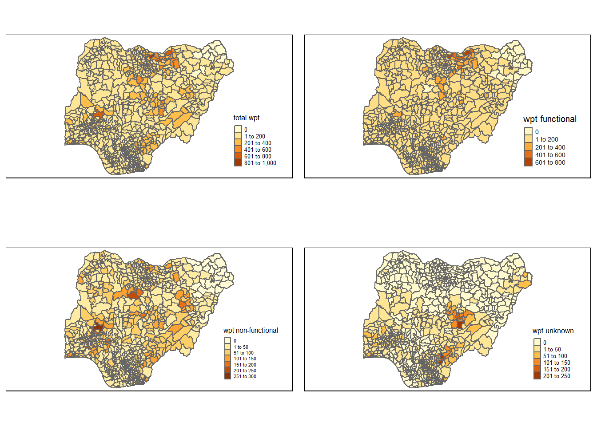

pacman::p_load(sf, tidyverse, tmap, spdep, funModeling, here)In-Class Ex 1 - Loading data + prepare data for take home Ex 1
Overview
Step 1: Import the required Packages
sf : Simple features for R. We import this package to help us read the aspatial and geospatial data.
tidyverse: This package help us to transform and better present the data.
tmap: We use this package to plot thematic maps
spdep: We use this package to help us obtain the spatial weights.
funModeling: We use this package to help us with EDA
here: Helps us generate a path to a specific directory on the root
Load the packages:
Step 2: Import the Data
Import Nigeria water point data-file:
Generate a path:
We use the here function to generate a specific file path on the root folder.
shapefile_path <- here("data", "dataNigeria", "geospatial")
shapefile_path[1] "D:/f4sared/ISSS624/data/dataNigeria/geospatial"Some useful link for the CRS:
st_read() belongs to the sf package. It reads simple features from file or database. Simple features or simple feature access refers to formal standard ISO 19125-1:2004 that describes how real world data can be represented in computers, with emphasis on the spatial geometry of these objects. Link below:
To find the CRS of the shapefile, open the .prj file as a text. It will tell you which projection system is being used.
Read the shapefile using st_read() belonging to the sf package:
The data read will be saved as a simple feature data table.
We will use the filter() function of dplyr package to filter only rows for Nigeria
# wp <- st_read(
# dsn = shapefile_path,
# layer = "geo_export",
# crs = 4326) %>%
# filter(clean_coun == "Nigeria")Generate the save path using here function:
savefile_path <- here("data", "dataNigeria", "geospatial", "wp_nga.rds")
savefile_path[1] "D:/f4sared/ISSS624/data/dataNigeria/geospatial/wp_nga.rds"We will next save the file using write_rds() of the tidyverse package:
rds is a native data format of R.
# wp_ng <- write_rds(wp, savefile_path)Import Nigeria geo-boundary file:
Next we will make the path to the geo boundary file:
shapefile_path <- here("data", "dataNigeria", "boundary")
shapefile_path[1] "D:/f4sared/ISSS624/data/dataNigeria/boundary"Next we will Import the Nigeria LGA Boundary Data with st_read() function:
The imported data will be saved as a simple features dataset.
nga <- st_read(
dsn = shapefile_path,
layer = "geoBoundaries-NGA-ADM2",
crs = 4326)Reading layer `geoBoundaries-NGA-ADM2' from data source
`D:\f4sared\ISSS624\data\dataNigeria\boundary' using driver `ESRI Shapefile'
Simple feature collection with 774 features and 5 fields
Geometry type: MULTIPOLYGON
Dimension: XY
Bounding box: xmin: 2.668534 ymin: 4.273007 xmax: 14.67882 ymax: 13.89442
Geodetic CRS: WGS 84Downsize further the wp_nga data:
Load the previously saved data:
We will select specific columns using select().
# final <- read_rds(rdsfile_path) %>% select(1:2, 14:17, 23)Create the path for saving the file
# savefile_path <- here("data", "dataNigeria", "geospatial", "wp_nga_v2.rds")
# savefile_pathSave the file:
# write_rds(final, savefile_path)Step 3: Data wrangling
Visualize Initial distribution
Generate path to rds file saved previously:
rdsfile_path <- here("data", "dataNigeria", "geospatial","wp_nga_v2.rds")
rdsfile_path[1] "D:/f4sared/ISSS624/data/dataNigeria/geospatial/wp_nga_v2.rds"Load the rds file with read_rds() function of the tidyverse package:
We will also make use of the piping to replace the “na” values with “unknown”.
mutate() is a function of the dplyr package.
wp_nga <- read_rds(rdsfile_path) %>%
mutate(status_cle = replace_na(status_cle, "Unknown"))Check the CRS of the spatial datafile with st_crs():
st_crs(wp_nga)Coordinate Reference System:
User input: EPSG:4326
wkt:
GEOGCRS["WGS 84",
DATUM["World Geodetic System 1984",
ELLIPSOID["WGS 84",6378137,298.257223563,
LENGTHUNIT["metre",1]]],
PRIMEM["Greenwich",0,
ANGLEUNIT["degree",0.0174532925199433]],
CS[ellipsoidal,2],
AXIS["geodetic latitude (Lat)",north,
ORDER[1],
ANGLEUNIT["degree",0.0174532925199433]],
AXIS["geodetic longitude (Lon)",east,
ORDER[2],
ANGLEUNIT["degree",0.0174532925199433]],
USAGE[
SCOPE["Horizontal component of 3D system."],
AREA["World."],
BBOX[-90,-180,90,180]],
ID["EPSG",4326]]Use the freq() of the funModeling package to show the distribution percentage of status_cle:
freq(data=wp_nga,
input = 'status_cle')Warning: The `<scale>` argument of `guides()` cannot be `FALSE`. Use "none" instead as
of ggplot2 3.3.4.
ℹ The deprecated feature was likely used in the funModeling package.
Please report the issue at <https://github.com/pablo14/funModeling/issues>.
status_cle frequency percentage cumulative_perc
1 Functional 45883 48.29 48.29
2 Non-Functional 29385 30.93 79.22
3 Unknown 10656 11.22 90.44
4 Functional but needs repair 4579 4.82 95.26
5 Non-Functional due to dry season 2403 2.53 97.79
6 Functional but not in use 1686 1.77 99.56
7 Abandoned/Decommissioned 234 0.25 99.81
8 Abandoned 175 0.18 99.99
9 Non functional due to dry season 7 0.01 100.00Filter for functional water-points:
Here we will use the filter() function from the dplyr package to select “functional” rows only:
We use the %in% to denote the membership in the group of strings.
wpt_functional <- wp_nga %>%
filter(status_cle %in%
c("Functional",
"Functional but not in use",
"Functional but needs repair"))Then we will plot with freq() function from funModeling to show the distribution:
freq(data=wpt_functional,
input = 'status_cle')
status_cle frequency percentage cumulative_perc
1 Functional 45883 87.99 87.99
2 Functional but needs repair 4579 8.78 96.77
3 Functional but not in use 1686 3.23 100.00Filter for non-functional
Filter for non-functional rows:
Use %in% for to select rows that fall into the specific categories.
wpt_nonfunctional <- wp_nga %>%
filter(status_cle %in%
c("Abandoned/Decommissioned",
"Abandoned",
"Non-Functional",
"Non functional due to dry season",
"Non-Functional due to dry season"))Plot the distribution with the freq() function:
freq(data=wpt_nonfunctional,
input = 'status_cle')
status_cle frequency percentage cumulative_perc
1 Non-Functional 29385 91.25 91.25
2 Non-Functional due to dry season 2403 7.46 98.71
3 Abandoned/Decommissioned 234 0.73 99.44
4 Abandoned 175 0.54 99.98
5 Non functional due to dry season 7 0.02 100.00Filter for unknown:
Lastly we filter for the rows that have unknown status:
wpt_unknown <- wp_nga %>%
filter(status_cle == "Unknown")Perform data manipulation:
Using st_intersects, we will be able to create a list of rows from wp_nga that intersects each row of nga.
For the intersection to work, st_intersect will check if each point falls within the polygon of nga.
Next we use the lengths() function to count the number of instances. Then we append to a new column.
We repeat this step across all 3 categories of Functional, Non-Functional & Unknown
nga_wp <- nga %>%
mutate(`total wpt` = lengths(
st_intersects(nga, wp_nga))) %>%
mutate(`wpt functional` = lengths(
st_intersects(nga, wpt_functional))) %>%
mutate(`wpt non-functional` = lengths(
st_intersects(nga, wpt_nonfunctional))) %>%
mutate(`wpt unknown` = lengths(
st_intersects(nga, wpt_unknown)))Next, using the mutate() function of dplyr, we will create 2 new columns:
pct_functional = `wpt functional`/`total wpt`
pct_non-functional = `wpt non-functional`/`total wpt`
We will then use select() of dplyr to retain the fields that we require.
nga_wp <- nga_wp %>%
mutate(pct_functional = `wpt functional`/`total wpt`) %>%
mutate(`pct_non-functional` = `wpt non-functional`/`total wpt`)
# select(3:4, 9:10, 18:23)We will then create a save file path:
savefile_path <- here("data", "dataNigeria", "geospatial", "nga_wp.rds")
savefile_path[1] "D:/f4sared/ISSS624/data/dataNigeria/geospatial/nga_wp.rds"Next we will save this final dataframe using write_rds of tidyverse package:
write_rds(nga_wp, savefile_path)Step 4: Plot the initial distribution
Plot the initial distribution of the water points using qtm() package of tmap:
Here we will add the additional settings to better adjust the size of the legend.
This is done via the tm_layout() function.
nga_wp <- read_rds(savefile_path)
total <- qtm(nga_wp, fill = "total wpt") +
tm_layout(legend.height = 0.4,legend.width = 0.4)
wp_functional <- qtm(nga_wp, fill = "wpt functional") +
tm_layout(legend.height = 0.4,legend.width = 0.4)
wp_nonfunctional <- qtm(nga_wp, fill = "wpt non-functional") +
tm_layout(legend.height = 0.4,legend.width = 0.4)
unknown <- qtm(nga_wp, fill = "wpt unknown") +
tm_layout(legend.height = 0.4,legend.width = 0.4)
tmap_arrange(total, wp_functional, wp_nonfunctional, unknown, asp=2, ncol=2)